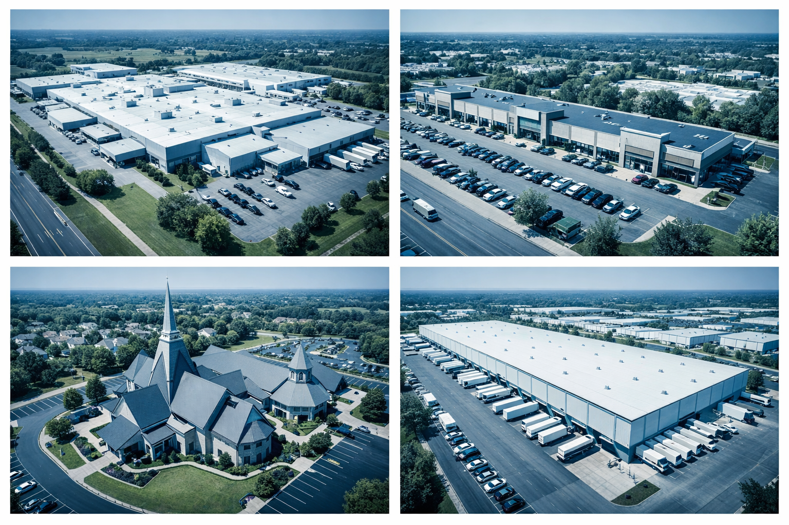

Drone & Sensor Integration Experts
From Inspection Data to Actionable Work Orders
Stratum Asset Intelligence automates the flow of drone inspection findings directly into your CMMS and ERP systems — eliminating manual data entry, reducing turnaround time, and keeping your assets maintained.
What We Do
Bridging the Gap Between Sensors and Systems
Most drone service providers deliver a PDF report and walk away. Stratum goes further — we transform raw inspection data into structured, CMMS-ready work orders that flow directly into your maintenance management system.
Whether you use IBM Maximo, FIIX, UpKeep, or Microsoft Dynamics 365, our integration layer ensures every defect, every thermal anomaly, and every condition assessment reaches the right technician with the right context.
View All Services
Our Services
End-to-End Asset Intelligence
From flight planning to work order creation — a complete inspection-to-action pipeline.
Drone Roof Inspections
Visual and thermal roof assessments for commercial, industrial, and institutional buildings. High-resolution imagery with georeferenced defect mapping.
CMMS Integration
Automated data pipelines from inspection findings to work orders in IBM Maximo, FIIX, UpKeep, Microsoft Dynamics 365, and other enterprise platforms.
Thermal Analysis
Infrared imaging for moisture detection, insulation deficiencies, and HVAC performance evaluation. Quantified findings with severity classifications.
Condition Assessments
Standardized asset condition scoring aligned to your maintenance framework. Prioritized repair schedules with cost estimates and lifecycle projections.
Data & Reporting
Comprehensive deliverables including orthomosaics, 3D models, annotated imagery, and structured CSV/JSON data exports ready for system import.
Consulting & Strategy
Guidance on integrating drone and sensor data into your existing asset management workflows. Technology selection, process design, and change management.
Industries
Built for Facility-Intensive Operations
We serve organizations that manage large physical asset portfolios and need inspection data that integrates with their maintenance systems.

Commercial Real Estate
Strip malls, office complexes, and retail centers with multi-tenant roof portfolios.
Industrial & Manufacturing
Plants, warehouses, and distribution centers with large flat-roof footprints.
Institutional
Churches, schools, hospitals, and municipal buildings with complex roofing systems.
Utilities & Energy
Power generation facilities, substations, and solar installations requiring routine aerial assessment.
Our Process
How It Works
Four steps from inspection to action — no manual data entry required.
Plan & Mobilize
We coordinate flight planning, permitting, and scheduling around your facility's operations. LAANC airspace authorization handled.
Capture
FAA Part 107 certified pilots deploy visual and thermal sensor payloads. Every image is geotagged, timestamped, and flight-logged.
Analyze & Structure
Raw imagery is processed into orthomosaics, defect annotations, and condition scores. Data is formatted to match your CMMS schema.
Integrate & Deliver
Structured work orders, asset records, and supporting imagery are pushed into your CMMS via API or secure import. Your team acts immediately.